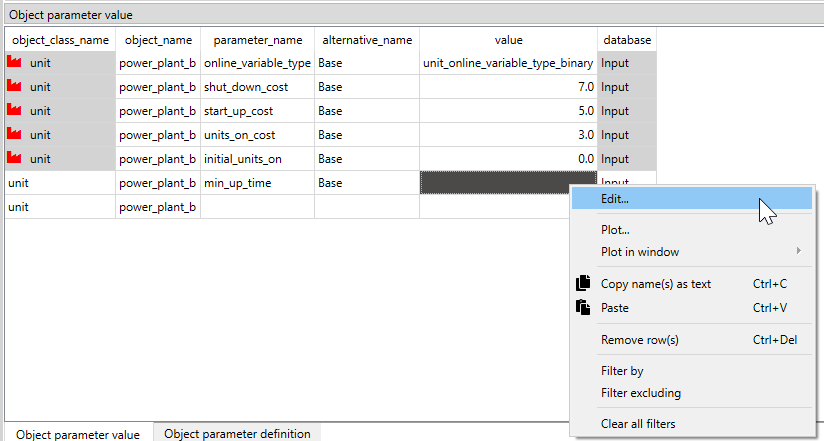

Unit commitment constraints tutorial
This tutorial provides a step-by-step guide to include unit commitment constraints in a simple energy system with Spine Toolbox for SpineOpt.
Introduction
Welcome to our tutorial, where we will walk you through the process of adding unit commitment constraints in SpineOpt using Spine Toolbox. To get the most out of this tutorial, we suggest first completing the Simple System tutorial, which can be found here.
Model assumptions
This tutorial is built on top of the Simple System. The main changes to that system are:
- The demand at electricity_node is a 24-hour time series instead of a unique value
- The power_plant_b has new parameters to account for the unit commitment constraints, such as minimum operating point, minimum uptime, and minimum downtime
- The optimization is done a mixed-integer programming (MIP) to account for the binary nature of the unit commitment decision variables
This tutorial includes a step-by-step guide to include the parameters to help analyze the results in SpineOpt and the unit commitment concepts.
Step 1 - Update the demand
Opening the Simple System project
- Launch the Spine Toolbox and select File and then Open Project or use the keyboard shortcut Ctrl + O to open the desired project.
- Locate the folder that you saved in the Simple System tutorial and click Ok. This will prompt the Simple System workflow to appear in the Design View section for you to start working on.
- Select the 'input' Data Store item in the Design View.
- Go to Data Store Properties and hit Open editor. This will open the database in the Spine DB editor.
In this tutorial, you will learn how to add unit commitment constraints to the Simple System using the Spine DB editor, but first let's start by updating the electricity demand from a single value to a 24-hour time series.
Editing demand value
- Always in the Spine DB editor, locate the Object tree (typically at the top-left). Expand the [root] element if not expanded.
- Expand the [node] class, and select the electricity_node from the expanded tree.
- Locate the Object parameter table (typically at the top-center).
- In the Object parameter table, identify the demand parameter which should have a 150 value from the Simple System first run.
- Right click on the value cell and then select edit from the context menu. The Edit value dialog will pop up.
- Change the Parameter type to Time series fixed resolution, Resolution to 1h, and the demand values to the time series as in the image below. You can copy and paste the values from the file: ucelectricitynode_demand.csv
- Finish by pressing OK in the Edit value menu. In the Object parameter table you will see that the value of the demand has changed to Time series.

Editing the temporal block
You might or might not notice that the Simple System has, by default, a temporal block resolution of 1D (i.e., one day); wait, what! Yes, by default, it has 1D in its template. So, we want to change that to 1h since our unit commitment case study is for a day-ahead dispatch of 24 hours.
- Locate again the Object tree (typically at the top-left). Expand the [root] element if not expanded.
- Expand the [temporal_block] class, and select the flat from the expanded tree.
- Locate the Object parameter table (typically at the top-center).
- In the Object parameter table, identify the resolution parameter which should have a 1D value from the Simple System first run.
- Right click on the value cell and then select edit from the context menu. The Edit value dialog will pop up.
- Change the Duration from 1D to 1h as shown in the image below.

Establishing new output relationships
Since we will have the new unit commitment variables, we want to see the results of these variables and their total cost in the objective function. So, we will create new relationships to report these results:
- In the Spine DB editor, locate the Relationship tree (typically at the bottom-left). Expand the root element if not expanded.
- Right click on the report__output class, and select Add relationships from the context menu. The Add relationships dialog will pop up.
- Enter report1 under report, and units_on under output. Repete the same procedure for the following outputs as seen in the image below; then press OK.
- This will write the unit commitment variable values and costs in the objective function to the output database as a part of report1.

When you're ready, commit all changes to the database.
Executing the workflow
Go back to Spine Toolbox's main window, and hit the Execute project button
 from the tool bar. You should see 'Executing All Directed Acyclic Graphs' printed in the Event log (at the bottom left by default).
from the tool bar. You should see 'Executing All Directed Acyclic Graphs' printed in the Event log (at the bottom left by default).Select the 'Run SpineOpt' Tool. You should see the output from SpineOpt in the Julia Console after clicking the object activity control.
Examining the results
- Select the output data store and open the Spine DB editor. You can already inspect the fields in the displayed tables.
- You can also activate the table view by pressing Alt + F for the shortcut to the hamburger menu, and select View -> Table.
- Remember to select the latest run in the Alternative tree. Expand the Output element if not expanded.
- In the Relationship parameter value table, double click in the Time series values to explore the results of the different variables.
- The image below shows the electricity flow results for both power plants. As expected, the power_plant_a (i.e., the cheapest unit) always covers the demand first until its maximum capacity, and then the power_plant_b (i.e., the more expensive unit) covers the demand that is left. This is the most economical dispatch since the problem has no extra constraints (so far!).

To explore the cost results, the pivot table view shows a more user-friendly option to analyze the results. Remember that you can find a description of how to create the pivot table view in the Simple System tutorial here. The cost components in the objective function are shown in the image below. As expected, all the costs are associated with the variable_om_costs since we haven't included the unit-commitment constraints yet.

Step 2 - Include the minimum operating point
Let's assume that the power_plant_b has a minimum operating point of 10%, meaning that if the power plant is on, it must produce at least 20MW.
Adding the minium operating point
- In the Spine DB editor, locate the Relationship tree (typically at the bottom-left). Expand the root element if not expanded.
- In Relationship tree, expand the unit__to_node class and select power_plant_b | electricity_node.
- In the Relationship parameter table (typically at the bottom-center), select the minimum_operating_point parameter and the Base alternative, and enter the value 0.1 as seen in the image below. This will set the minimum operating point of power_plant_b when producing electricity.

Adding the unit commitment costs and initial states
- Locate the Object tree (typically at the top-left). Expand the [root] element if not expanded.
- Expand the [unit] class, and select the power_plant_b from the expanded tree.
- In the Object parameter table (typically at the top-center), select the following parameter as seen in the image below:
- online_variable_type parameter and the Base alternative, and select the value unit_online_variable_type_binary. This will define that the unit commitment variables will be binary. SpineOpt identifies this situation from the input data and internally changes the model from LP to MIP.
- shut_down_cost parameter and the Base alternative, and enter the value 7. This will establish that there's a cost of '7' EUR per shutdown.
- start_up_cost parameter and the Base alternative, and enter the value 5. This will establish that there's a cost of '5' EUR per startup.
- units_on_cost parameter and the Base alternative, and enter the value 3. This will establish that there's a cost of '3' EUR per units on (e.g., idling cost).
- initial_units_on parameter and the Base alternative, and enter the value 0. This will establish that there are no units 'on' before the first time step.

When you're ready, commit all changes to the database.
Executing the workflow including the minimum operating point
Go back to Spine Toolbox's main window, and hit the Execute project button
from the tool bar. You should see 'Executing All Directed Acyclic Graphs' printed in the Event log (at the bottom left by default).Select the 'Run SpineOpt' Tool. You should see the output from SpineOpt in the Julia Console after clicking the object activity control.
Do you notice something different in your solver log? Depending on the solver, the output might change, but you should be able to see that the solver is using MIP to solve the problem. For instance, if you are using the solver HiGHS (i.e., the default solver in SpineOpt), then you will see something like "Solving MIP model with:" and the Branch and Bound (B&B) tree solution. Since this is a tiny problem, sometimes the solver can find the optimal solution from the presolve step, avoiding going into the B&B step.
Examining the results including the minimum operating point
- Select the output data store and open the Spine DB editor. You can already inspect the fields in the displayed tables.
- You can also activate the table view by pressing Alt + F for the shortcut to the hamburger menu, and select View -> Table.
- Remember to select the latest run in the Alternative tree. Expand the Output element if not expanded.
- In the Relationship parameter value table, double click in the Time series values to explore the results of the different variables.
- The image below shows the electricity flow results for both power plants. Any difference? What happended to the flows in power_plant_a and power_plant_b?

- Let's take a look to the units_on and units_started_up in the image below to get wider perspective.

- So, since power_plant_b needs to be at least producing 20MW when it is 'on', then power_plant_a needs to reduce its output even though it has the lower variable cost, making the total system cost (i.e., objective function) more expensive than in the previous run. The image below shows the cost components, where we can see the costs of having the power_plant_b on, its start-up and shutdown costs, and the increase in the variable_om_costs due to flow changes.

Step 3 - Include the minimum uptime
Let's assume that the power_plant_b also has a minimum uptime of 8 hours, meaning that if the power plant starts up, it must be on at least eight hours.
Adding the minimum uptime
- Locate the Object tree (typically at the top-left). Expand the [root] element if not expanded.
- Expand the [unit] class, and select the power_plant_b from the expanded tree.
- In the Object parameter table (typically at the top-center), select the min_up_time parameter, the Base alternative, and then right click on the value and select the Edit option in the context menu, as shown in the image below.

- The Edit value dialog will pop up. Select the Parameter_type as Duration and enter the value 8h. This will establish that minimum uptime is eight hours.

When you're ready, commit all changes to the database.
Executing the workflow including the minimum uptime
You know the drill, go ahead :wink:
Examining the results including the minimum uptime
- Select the output data store and open the Spine DB editor. You can already inspect the fields in the displayed tables.
- You can also activate the table view by pressing Alt + F for the shortcut to the hamburger menu, and select View -> Table.
- Remember to select the latest run in the Alternative tree. Expand the Output element if not expanded.
- In the Relationship parameter value table, double click in the Time series values to explore the results of the different variables.
- The image below shows the electricity flow results for both power plants. Interesting. Don't you think?

- Let's take a look again to the units_on and units_started_up in the image below.

- So, since power_plant_b needs to be at least producing 20MW when it is 'on' and also needs to be at least 8h 'on' each time it starts, then power_plant_b starts even before the demand is greater than the capacity of power_plant_a. Therefore, power_plant_a needs to reduce even further its output, making the total system cost more expensive than in the previous runs. The image below shows the cost components, where we can see the costs of having the power_plant_b on, its start-up and shutdown costs, and the increase in the variable_om_costs due to flow changes.

Step 4 - Include the minimum downtime
Let's assume that the power_plant_b also has a minimum downtime of 8 hours, meaning that if the power plant shuts down, it must be off at least eight hours.
Adding the minimum downtime
- Locate the Object tree (typically at the top-left). Expand the [root] element if not expanded.
- Expand the [unit] class, and select the power_plant_b from the expanded tree.
- In the Object parameter table (typically at the top-center), select the min_down_time parameter, the Base alternative, and then right click on the value and select the Edit option in the context menu, as shown in the image below.

- The Edit value dialog will pop up. Select the Parameter_type as Duration and enter the value 8h. This will establish that minimum downtime is eight hours.

When you're ready, commit all changes to the database.
Executing the workflow including the minimum downtime
One last time, don't give up!
Examining the results including the minimum downtime
- Select the output data store and open the Spine DB editor. You can already inspect the fields in the displayed tables.
- You can also activate the table view by pressing Alt + F for the shortcut to the hamburger menu, and select View -> Table.
- Remember to select the latest run in the Alternative tree. Expand the Output element if not expanded.
- In the Relationship parameter value table, double click in the Time series values to explore the results of the different variables.
- The image below shows the electricity flow results for both power plants. Wow! This result is even more interesting :stuckouttonguewinkingeye:. Do you know what happened?

- Let's take a look again to the units_on and units_started_up in the image below. Instead of two start-ups, the power_plant_b only starts once. Why?

- Since power_plant_b needs to be at least producing 20MW when it is 'on' plus also needs to be at least 8h 'on' each time it starts, and it needs to be at least 8h 'off' if it shutdowns, then power_plant_b never shuts down and stays 'on' after it starts because it is the only way to fulfil the unit commitment constraints. Therefore, power_plant_a needs to reduce even further its output, making the total system cost more expensive than in the previous runs. The image below shows the cost components, where we can see the costs of having the power_plant_b on, its start-up and shutdown costs (which is zero this time), and the increase in the variable_om_costs due to flow changes.

If you have completed this tutorial, congratulations! You have mastered the basic concepts of unit commitment using SpineToolbox and SpineOpt. Keep up the good work!